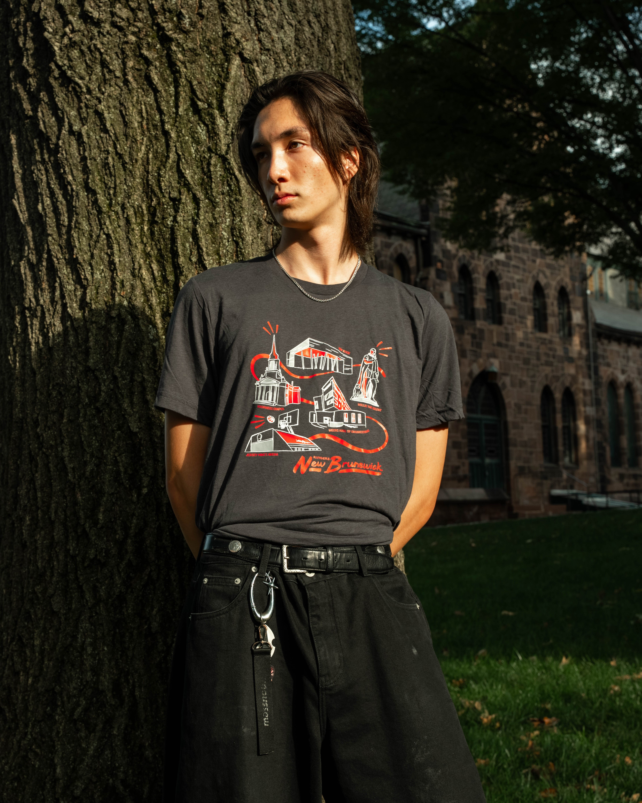
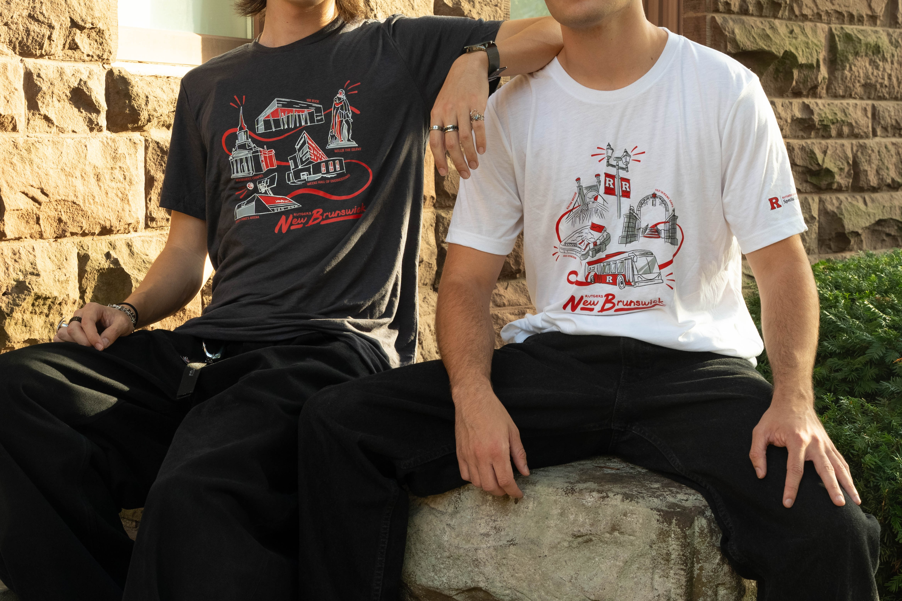

2025 Rutgers Landmark Collection
↳ Summer/Fall 2025
↳ Illustration, Merchandise
A series of four designs commissioned for the 2025 Rutgers Special Collection, an annual, limited-time showcase of merchandise that celebrates university pride.
Designs were created for each campus: two for New Brunswick, and one for Camden and Newark, as well as one design focused on our campus buses.
Thanks to those at the RU Office of Trademark Licensing for this collaboration!
Photo credit Veronica Mendez / Rutgers University.


